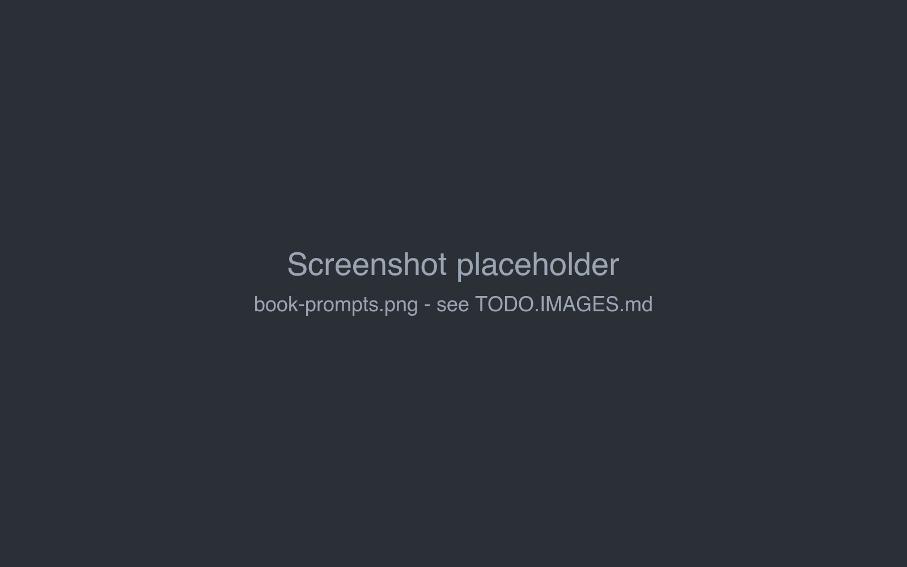
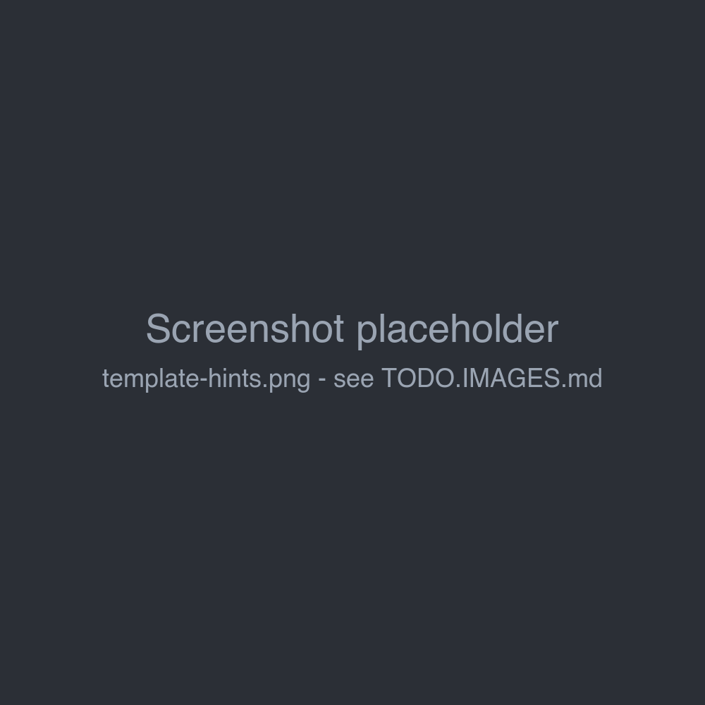

Book prompts
The Prompts tab of a book holds the texts Marginalia builds the prompt from: two templates, the narrative settings and the summary prompts. They decide the voice of the book far more than the model settings do.

Defaults and book values
Every field is optional. An empty field uses the default from Settings → Templates (see Account & settings), and when that is empty too, the built-in default. The default is shown in grey in the empty field.
So set what all your books share in Settings, and only what is special to a book on its Prompts tab. Changes are saved as you type.
Each field has a hints popover with Insert Default Template, which copies the default into the field as a starting point for your own version. The template fields also list the Available Template Variables and the Available Macros.

The fields
Point of View, Tense and Style are inserted into the master template as they are; macros don't work in them.
A template with a syntax error is not saved; a warning shows the error.
Templates
Templates are text with placeholders in double curly braces. Each template gets its own variables:
A section prints its content only when the variable is not empty, so the prompt has no empty headings:
{{#sceneSetting}}Current Location & Time: {{.}}{{/sceneSetting}}{{.}} inside a section is the variable's value. With an empty Scene Setting the whole line is left out.
All templates can also use the SillyTavern-compatible macros, such as {{user}} (the point of view
character), {{description}} (the book's description), {{random::a::b}}, {{getvar::name}} and
{{setvar::name::value}}. See Templates & macros for the full syntax and the macro
reference.
Master template
The master template becomes the system message, the first message of the prompt. The built-in default has these blocks:
- System role - the model is an author continuing the story.
- World & lore context - the activated lorebook entries (
backgroundLore). - Writing style & mechanics - point of view, tense, style, and general prose rules.
- Summary of story so far - the summaries.
If the inference provider has a jailbreak prompt enabled, it is put before the master template.
User prompt
The user prompt is the last message of the prompt: the request for the part to write. It is filled from the New Turn Instructions (or the Turn Details for Regenerate and Swipe). The built-in default asks for the next section with the point of view character, location, characters present and the plot instructions, followed by rules: no new characters unless requested, follow the instructions, keep the continuity, and output only the story text.
Lorebook entries with the insertion mode Before User Prompt are put right before it; see Entries & activation.
How the prompt is put together
system jailbreak (if enabled) + master template
user [ Generate story. ]
assistant part #1
user [ Generate more story. ]
assistant part #2
... (as many earlier parts as fit)
user lore "Before User Prompt" + user promptEarlier parts are sent as the model's own answers, so it continues them in the same voice. When the story is longer than the context limit, the oldest parts are left out first; summaries keep them in the story in condensed form.
Show Prompt in the menu of any part shows the exact prompt that part was written from.
Tips
-
Put rules that apply to every part (no new characters, length, formatting) into the user prompt: being the last message, it has the strongest effect.
-
Put lasting facts about the world and characters into the lorebook, not into Style.
-
Ask for a length in the instructions ("about 800 words") rather than relying on the response limit, which cuts the text off.
-
After changing a template, generate a part and check it with Show Prompt.